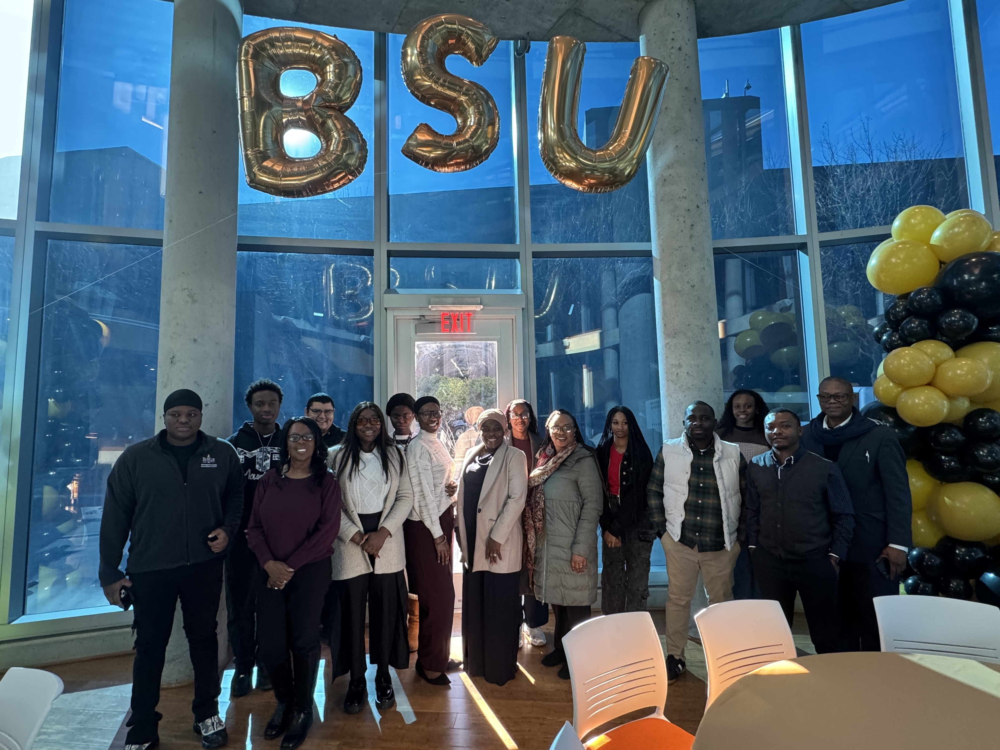

Mentorship as workforce development
Structured mentorship prepares students for data-driven careers.
A center-led mentorship and applied data analytics program. It connects students with faculty, staff, and industry mentors to work on real data and research projects.

The Match Program turns classroom learning into applied analytics experience. Students are paired with mentors based on research interests, technical skills, and career goals, then work on real projects using tools like Python, Power BI, Tableau, Excel, SPSS, and Google Colab.
The model is built for HBCUs, where students often have less access to professional networks and hands-on research. Each cohort ends with deliverables students can show employers: dashboards, reports, and research they can present.
I lead the program from design through assessment: the matching framework, mentor and mentee onboarding, project tracking, stakeholder reporting, and planning for growth.
Matching process, mentor and mentee guidelines, and success measures tied to institutional goals.
Undergraduate and graduate mentees recruited. Faculty, staff, and industry professionals engaged as mentors.
Regular check-ins, progress tracking, and coordination of projects, resources, and timelines.
Engagement, satisfaction, and outcome data reported to stakeholders and leadership.
The program was presented at the 24th Annual Hawaii International Conference on Education (EDU2026), Honolulu.
"Match Program: A Community Based Approach to Advancing Experiential Learning in Data Analytics through Mentorship" Amina Ayodeji-Ogundiran, Eona Harrison, and Bolametiren Akinlaja — EDU2026 proceedings, p. 1013


Structured mentorship prepares students for data-driven careers.
Mentees work on real-world data problems, bridging classroom theory and workplace practice.
Intentional program design gives students access to mentorship and professional networks they might not otherwise reach.
The framework is built to expand to more cohorts, disciplines, and institutions.
Python, Power BI, Tableau, Microsoft Excel, SPSS, Google Colab, data storytelling, and program analytics.
Interested in the Match Program, or in running a version of it at your institution? Let's talk.